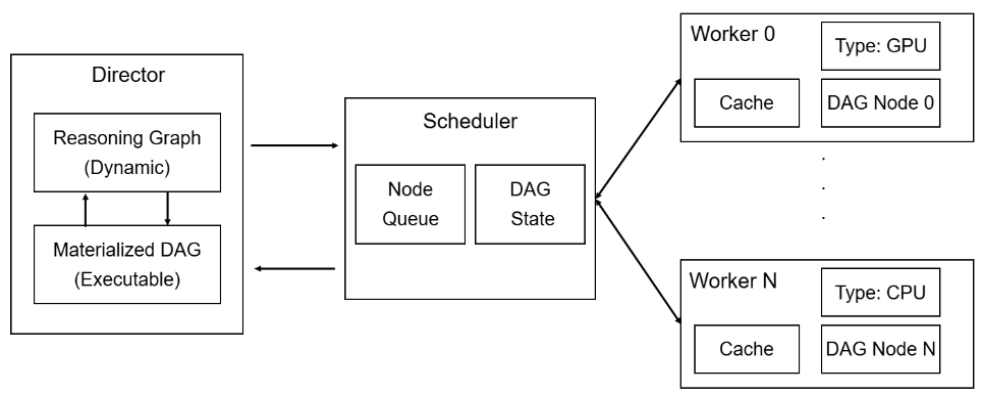

Wenbo architecture: a Director maintains the reasoning graph, a Scheduler places DAG nodes, and Workers execute GPU/CPU nodes.
Motivation LLM-based agents have become a mainstream paradigm for complex reasoning tasks that require planning, tool use, and interaction with external environments. These workloads alternate between GPU-intensive LLM inference and CPU-intensive tool invocation, retrieval, and orchestration. However, many existing systems allocate resources at coarse task granularity, holding a resource bundle for a task's lifetime. This can leave GPUs idle during CPU-bound phases and CPUs underutilized during GPU-bound phases, causing resource fragmentation as concurrency grows.
Our solution Wenbo is a DAG-centric execution system that decouples agent reasoning from resource management. Rather than assigning a fixed resource bundle to each task, Wenbo executes agent workflows as dynamic DAGs and schedules individual nodes across a shared GPU/CPU pool. The system comprises three components: